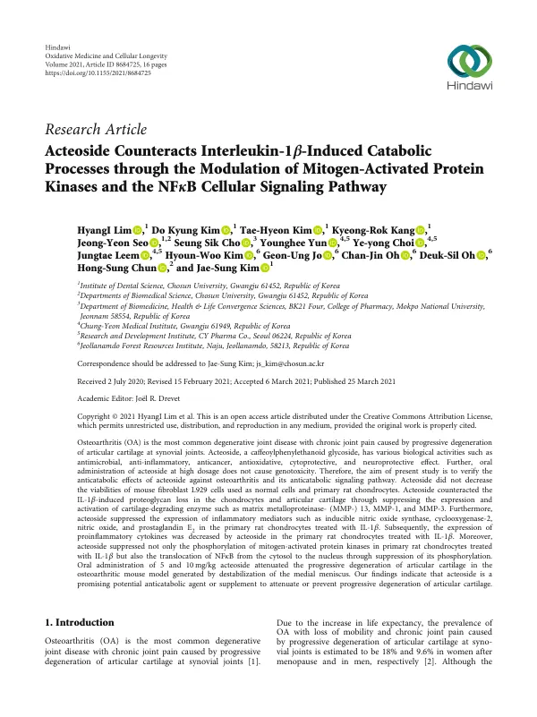

Acteoside Counteracts Interleukin‐1β‐Induced Catabolic Processes through the Modulation of Mitogen‐Activated Protein Kinases and the NFκB Cellular Signaling Pathway
Lim H, Kim DK, Kim TH, Kang KR, Seo JY, Cho SS, Yun Y, Choi Yy, Leem J, Kim HW, Jo GU, Oh CJ, Oh DS, Chun HS, Kim JS
Oxidative Medicine and Cellular Longevity 2021(1):8684725

첫 장 · 오픈액세스First page · open access
논문 소개Summary
골관절염은 관절 연골이 점차 닳아 만성 통증을 일으키는 가장 흔한 퇴행성 관절질환입니다. 악테오사이드는 항염증과 항산화 작용이 보고된 성분입니다. 이 연구는 악테오사이드가 연골 파괴를 막는지와 그 경로를 확인했습니다. 정상 세포와 랫드 연골세포의 생존율을 낮추지 않으면서 인터루킨1베타로 유발된 프로테오글리칸 소실을 막았고, 연골을 분해하는 기질금속단백분해효소들의 발현과 활성화를 억제했습니다. 산화질소 합성효소와 사이클로옥시게나제2, 염증성 사이토카인의 발현도 줄었고 NFκB의 핵 이동을 억제했습니다. 내측반월판 불안정화로 만든 생쥐 모델에서 경구투여가 연골의 진행성 퇴행을 완화했습니다.
Osteoarthritis, the commonest degenerative joint disease, brings chronic pain as articular cartilage progressively degenerates. Acteoside is a compound reported to have anti-inflammatory, antioxidative and neuroprotective activity, and oral administration at high dose does not cause genotoxicity. This study verified whether acteoside counteracts cartilage breakdown, and traced its signalling pathway. Without reducing the viability of normal cells or primary rat chondrocytes, acteoside counteracted interleukin-1β-induced proteoglycan loss and suppressed the expression and activation of matrix metalloproteinase-13, -1 and -3. Expression of inducible nitric oxide synthase, cyclooxygenase-2 and proinflammatory cytokines also fell, and acteoside suppressed both the phosphorylation of mitogen-activated protein kinases and the translocation of NFκB to the nucleus. In a mouse model generated by destabilisation of the medial meniscus, oral administration of 5 and 10 mg/kg attenuated the progressive degeneration of articular cartilage.
인용Cite
Lim H, Kim DK, Kim TH, Kang KR, Seo JY, Cho SS, Yun Y, Choi Yy, Leem J, Kim HW, Jo GU, Oh CJ, Oh DS, Chun HS, Kim JS. Acteoside Counteracts Interleukin‐1β‐Induced Catabolic Processes through the Modulation of Mitogen‐Activated Protein Kinases and the NFκB Cellular Signaling Pathway. Oxidative Medicine and Cellular Longevity. 2021;2021(1):8684725. doi:10.1155/2021/8684725